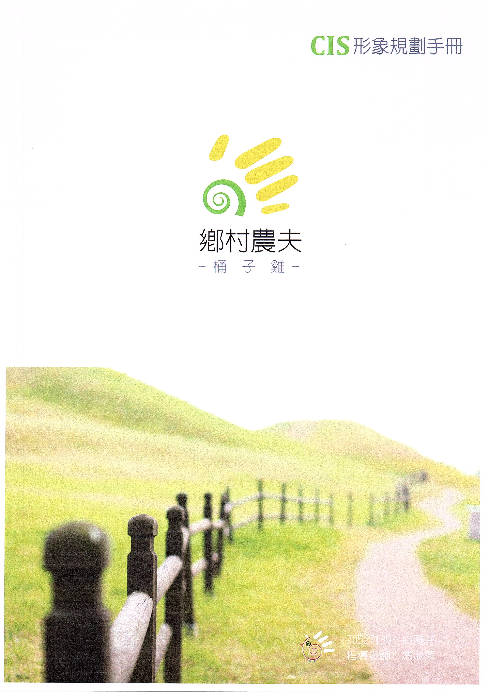

**品 牌 名 稱**
鄉村農夫-桶子雞
學號:S0727111 姓名:白雅芬
品牌故事:這是一位上班族獨立創業的故事
想要從事販售桶子雞行業，是因為老闆娘偶爾機會接觸到同學在台北販售桶子雞成功的案例，發而想要開創屬於自己的事業
鄉村農夫-桶子雞-首店位於台北板橋長江路上，每天生意賣得嚇嚇叫，夯的不的了。高雄位於瑞豐夜市附近，採用預約制，老闆娘接到電話預訂後會立刻新鮮現烤
因為是新鮮雞肉，只要先把裡頭內臟等都處理過，在用些許的鹽巴及蒜薑等天然食材醃入味，烤四十分鐘出爐，香味濃郁，滴出來的雞湯都是原汁原味